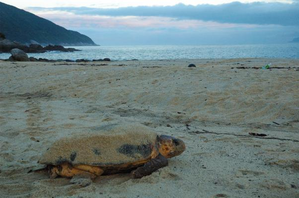

屋久島
巨大杉の景観美と森と水の楽園
『屋久島』
「月に35日雨が降る」と例えられるほどの多雨地域であることに加え、黒潮の影響を受けた温暖湿潤な気候の屋久島では、海岸線から山頂にかけて標高が上がるごとに
亜熱帯から亜寒帯まで植生が移り変わる、幅広い植物分布をみることができる。この植物の垂直分布が屋久島の大きな特徴の一つである。
屋久島に広がる標高2000ｍにかけての森林には、日本列島の南北約2000㎞の範囲に対応する植生が凝縮されている。
この自然環境に固有な植物にスギがある。樹齢1000年を超える屋久島固有のスギを「屋久杉」と呼ぶ。花崗岩からなる栄養素の少ない地表では、スギはゆっくりと成長し、
目が詰まって樹脂を多く蓄える。
多雨地域における湿度の高さもスギに樹脂の分泌を促す。樹脂には、防菌、抗菌、防虫作用があるため、湿度の高い環境でも屋久杉は腐ることなく長い樹齢を保つことができている。
一湊海水浴場
屋久島の最北端にある島内一の広さを誇る海水浴場。鹿児島県の海水浴場水質ベスト1に選ばれるほどの透明度！
シーカヤック
カヤックに乗って川や海を散策できます。沖へ出れば、青い海に浮かぶ屋久島を一望できますよ！
トビウオ料理
日本の漁場の中でトビウオの水揚げ量が全国トップクラスの屋久島では、トビウオ料理が島のソウルフード。是非一度ご賞味あれ！

ウミガメ観察
日本一かつ世界有数のウミガメ産卵地「永田浜」で、毎年5月から夏にかけて「ウミガメ観察会」が開かれる。